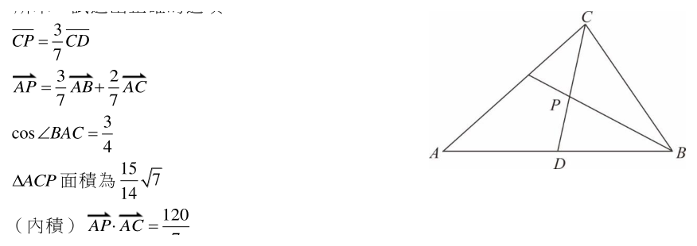

114 年學科能力測驗數學A試題與答案
這一頁是民國 114 年學科能力測驗數學A的整份歷屆試題，共 20 題，題目與標準答案出自大考中心 學測歷年試題（依著作權法 §9，考試試題不受著作權保護），其中 20 題附有詳解。以下逐題列出題幹、選項與答案；要計時作答或記錄成績，請用線上練習。
線上作答這一科 →
全部 20 題
第 1 題
不透明袋中有藍、綠色球各若干顆，且球上皆有 1 或 2 的編號，其顆數如下表，例如標有 1 號的藍色球有 2 顆。從此袋中隨機抽取一球（每顆球被抽到的機率相等），若已知抽到藍色球的事件與抽到 1 號球的事件互相獨立，試問 \(k\) 值為何？
藍、綠色球依編號的顆數 | 藍 | 綠 |
|---|
| 1 號 | 2 | 4 |
| 2 號 | 3 | \(k\) |
- （A）2
- （B）3
- （C）4
- （D）5
- （E）6
答案：（E）
詳解與考點
正解：題幹給「抽到藍色球」與「抽到 1 號球」互相獨立，應用 P(藍且1號)=P(藍)P(1號)。藍球有 2+3=5 顆，綠球有 4+k 顆，總數為 9+k；1 號球有 2+4=6 顆，藍色且 1 號有 2 顆。代入 2/(9+k)=(5/(9+k))×(6/(9+k))。兩邊乘 (9+k)²，得 2(9+k)=30；18+2k=30；2k=12；k=6，故 E 為正解。
A：k=2 時，總數 11，左邊 P(藍且1號)=2/11，右邊 P(藍)P(1號)=(5/11)×(6/11)=30/121，兩者不等，錯誤。
B：k=3 時，左邊=2/12=1/6，右邊=(5/12)×(6/12)=5/24，不等，錯誤。
C：k=4 時，左邊=2/13，右邊=(5/13)×(6/13)=30/169，不等，錯誤。
D：k=5 時，左邊=2/14=1/7，右邊=(5/14)×(6/14)=15/98，不等，錯誤。
本題考點：獨立事件——兩事件獨立時 P(A∩B)=P(A)P(B)；機率計數——先列總球數、各事件球數與交集球數，再代入方程求未知數。
第 2 題
坐標平面上，\( P(a,0) \) 為 x 軸上一點，其中 \( a>0 \)。令 \( L_1 \)、\( L_2 \) 為通過 \( P \) 點，斜率分別為 \( -\frac{4}{3} \)、\( -\frac{3}{2} \) 的直線。已知 \( L_1 \)、\( L_2 \) 分別與兩坐標軸圍成的兩個直角三角形的面積差為 3，試問 \( a \) 值為何？
- （A）\( 3\sqrt{2} \)
- （B）6
- （C）\( 6\sqrt{2} \)
- （D）9
- （E）\( 8\sqrt{2} \)
答案：（B）
詳解與考點
正解：本題要比較兩條直線與坐標軸圍成的三角形面積，先用直線截距求面積，因兩線都通過 P(a,0)，可把面積直接寫成 a² 與斜率絕對值的乘積。過 P(a,0)、斜率為 m 的直線為 y=m(x-a)，其 x 截距為 a，y 截距為 -ma，故三角形面積＝1/2·a·|-ma|＝1/2a²|m|。L₁ 的面積＝1/2a²·4/3＝2a²/3；L₂ 的面積＝1/2a²·3/2＝3a²/4。面積差＝3a²/4-2a²/3＝9a²/12-8a²/12＝a²/12。由 a²/12=3，得 a²=36；又 a>0，故 a=6，B 為正解。
A：代入 a=3√2，得面積差＝a²/12＝18/12＝3/2，不是 3，A 錯誤。它看起來對，是因為若把 1/2a²|m| 的係數或分數通分算錯，容易多留下 √2。
C：代入 a=6√2，得面積差＝a²/12＝72/12＝6，不是 3，C 錯誤。
D：代入 a=9，得面積差＝a²/12＝81/12＝27/4，不是 3，D 錯誤。
E：代入 a=8√2，得面積差＝a²/12＝128/12＝32/3，不是 3，E 錯誤。
本題考點：直線截距與三角形面積——過 (a,0) 且斜率為 m 的直線，與兩軸圍成面積為 1/2a²|m|；面積差判準——比較斜率絕對值時以較大者減較小者，再代入已知面積差解 a；正值限制——由 a² 求 a 時，題設 a>0 即取正根。
第 3 題
某校舉辦音樂會，包含鋼琴表演 5 個、小提琴表演 4 個、歌唱表演 3 個等三類表演共 12 個不同曲目。該校想將同類表演排在一起，且歌唱必須排在鋼琴之後或是小提琴之後。試問這場音樂會可能的曲目排列方式共有幾種？
- （A）\( 5! \times 4! \times 3! \)
- （B）\( 2 \times 5! \times 4! \times 3! \)
- （C）\( 3 \times 5! \times 4! \times 3! \)
- （D）\( 4 \times 5! \times 4! \times 3! \)
- （E）\( 6 \times 5! \times 4! \times 3! \)
答案：（D）
詳解與考點
正解：同類表演必須排在一起，故先把鋼琴、小提琴、歌唱各視為一個區塊，再用區塊順序處理歌唱在後的條件。鋼琴區塊內有 5!=120 種，小提琴區塊內有 4!=24 種，歌唱區塊內有 3!=6 種。三區塊的 3!=6 種順序為 PVS、PSV、VPS、VSP、SPV、SVP；其中歌唱 S 在鋼琴 P 或小提琴 V 之後的 PVS、PSV、VPS、VSP 共 4 種。因此總數=4×5!×4!×3!=4×120×24×6，符合 D，故 D 為正解。
A：只計算各區塊內部排列 5!×4!×3!，漏算三個區塊的外部順序，A 錯誤。
B：2×5!×4!×3! 的係數 2 只會算到歌唱緊接在某一區塊後的部分情形；實際符合條件的區塊順序共有 4 種，B 錯誤。它看起來對，是因為容易把「在……之後」誤讀為「緊接在……之後」。
C：係數 3 與符合條件的區塊順序數 4 不符，C 錯誤。
E：係數 6 是三區塊所有排列，包含 S 最前的 SPV、SVP 兩種不合條件的順序，E 錯誤。
本題考點：分組排列——同類元素須相鄰時先綁成區塊，總數＝區塊內排列數×區塊間排列數；條件計數判準——列出區塊順序後逐一檢查相對位置，「在……之後」不表示必須相鄰。
第 4 題
坐標平面上，\(x\) 坐標與 \(y\) 坐標均為整數的點稱為格子點。試問在函數圖形 \(y=\log_2 x\)、\(x\) 軸與直線 \(x=\dfrac{61}{2}\) 所圍有界區域的內部（不含邊界）共有多少個格子點？
- （A）88
- （B）89
- （C）90
- （D）91
- （E）92
答案：（C）
詳解與考點
正解：本題求對數曲線、x 軸與 x=61/2 所圍區域內部的格子點，關鍵是先以不等式排除邊界，再依 x 的範圍逐段計數。曲線在 x 軸上方須 x>1，且內部在直線 x=61/2=30.5 左側，所以整數 x 為 2,3,……,30。對每個 x，整數 y 須滿足 0<y<log₂x。x=2 時，log₂2=1，沒有整數 y；x=3,4 時，1<log₂x≤2，y=1，共 2×1=2 點；x=5,6,7,8 時，2<log₂x≤3，y=1,2，共 4×2=8 點；x=9,10,……,16 時，3<log₂x≤4，y=1,2,3，共 8×3=24 點；x=17,18,……,30 時，4<log₂x<5，y=1,2,3,4，共 14×4=56 點。總數為 0+2+8+24+56=90，故 C 為正解。
A：88 比正確總數少 2，未依各段完整計入可取的整數 y，A 錯誤。
B：89 比正確總數少 1，常見原因是遺漏某一個內部格子點，B 錯誤。
D：91 比正確總數多 1，可能把曲線上的邊界點計入；例如 x=4 時 y=2 在 y=log₂x 上，不屬內部，D 錯誤。
E：92 比正確總數多 2，未排除 x 軸或對數曲線上的邊界點會造成多算，E 錯誤。
本題考點：對數函數圍成區域的格子點計數——先將區域內部寫成嚴格不等式，再固定整數 x，計算滿足 0<y<log₂x 的整數 y 個數；邊界判準——x 軸、曲線與直線皆不計入，遇 log₂x 為整數時，該高度的點在曲線上必須排除。
第 5 題
設 \(0 \le \theta \le 2\pi\)。已知所有滿足 \(\sin 2\theta > \sin \theta\) 且 \(\cos 2\theta > \cos \theta\) 的 \(\theta\) 可表為 \(a\pi < \theta < b\pi\)，其中 \(a, b\) 為實數，試問 \(b - a\) 值為何？
- （A）\(\dfrac{1}{3}\)
- （B）\(\dfrac{1}{2}\)
- （C）\(\dfrac{2}{3}\)
- （D）\(\dfrac{3}{4}\)
- （E）1
答案：（A）
詳解與考點
正解：題幹要求兩個倍角不等式同時成立，先各自因式分解並取解集交集。sin 2θ−sin θ＝2cos（3θ／2）sin（θ／2）＞0；cos 2θ−cos θ＝−2sin（3θ／2）sin（θ／2）＞0。當 0＜θ＜2π 時，sin（θ／2）＞0，因此須有 cos（3θ／2）＞0 且 sin（3θ／2）＜0，交集為 π＜θ＜4π／3。故 a＝1、b＝4／3，b−a＝4／3−1＝1／3，A 正確。
B：1／2 對應區間長 π／2，非兩不等式交集的長度 π／3。
C：2／3 是只取較寬的單一不等式解集時可能產生的誤差；題目要求同時成立，故錯誤。
D：3／4 與由 π 到 4π／3 的端點差不符。
E：1 與交集長度 π／3 不符。
本題考點：和差化積——sin u−sin v＝2cos［（u＋v）／2］sin［（u−v）／2］、cos u−cos v＝−2sin［（u＋v）／2］sin［（u−v）／2］；聯立不等式——分別解出後必取交集。
第 6 題
坐標空間中有三個彼此互相垂直之向量 \(\vec{u}\)、\(\vec{v}\)、\(\vec{w}\)。已知 \(\vec{u}-\vec{v}=(2,-1,0)\)，且 \(\vec{v}-\vec{w}=(-1,2,3)\)。試問由 \(\vec{u}\)、\(\vec{v}\)、\(\vec{w}\) 所張出的平行六面體之體積為何？
- （A）\(2\sqrt{5}\)
- （B）\(5\sqrt{2}\)
- （C）\(2\sqrt{10}\)
- （D）\(4\sqrt{5}\)
- （E）\(4\sqrt{10}\)
答案：（C）
詳解與考點
正解：三向量彼此垂直，平行六面體體積可用|u||v||w|；又正交向量差的長度平方可拆成兩向量長度平方和。令|u|²=a、|v|²=b、|w|²=c。由u−v=(2,−1,0)，|u−v|²=2²+(−1)²+0²=5，且u·v=0，所以a+b=5。由v−w=(−1,2,3)，|v−w|²=(−1)²+2²+3²=14，且v·w=0，所以b+c=14。再算u−w=(u−v)+(v−w)=(2,−1,0)+(−1,2,3)=(1,1,3)，|u−w|²=1²+1²+3²=11，且u·w=0，所以a+c=11。三式相加：2a+2b+2c=5+14+11=30，故a+b+c=15。a=(5+11−14)/2=1，b=(5+14−11)/2=4，c=(14+11−5)/2=10。體積=√a·√b·√c=√(abc)=√(1×4×10)=√40=2√10，故C正確。
A：2√5的平方為20，不等於abc=40，錯誤。
B：5√2的平方為50，不等於40，錯誤。
D：4√5的平方為80，不等於40，錯誤。
E：4√10的平方為160，不等於40，錯誤。
本題考點：正交向量——u·v=0時，|u−v|²=|u|²+|v|²；平行六面體體積——三邊兩兩垂直時為|u||v||w|；聯立判準——以三組兩兩平方長度和解出a、b、c。
第 7 題（多選）
已知數列 \(\langle a_n \rangle\) 滿足 \(3a_{n+1} = a_n + n\)（對任意正整數 \(n\) 都成立）且 \(a_1 = 2\)。令數列 \(\langle b_n \rangle\) 滿足 \(b_n = a_n - \dfrac{n}{2} + \dfrac{3}{4}\)。試選出正確的選項。
- （A）\(a_2 = 2\)
- （B）\(b_2 = \dfrac{3}{4}\)
- （C）數列 \(\langle b_n \rangle\) 是公比為 \(\dfrac{2}{3}\) 的等比數列
- （D）對於任意正整數 \(n\)，\(3^n a_n\) 皆為正整數
- （E）\(b_{10} < 10^{-4}\)
答案：（B）（D）
詳解與考點
正解：B、D。題幹已定義 b_n=a_n-n/2+3/4，應先由遞迴式求首項，再代入 b_n 消去含 n 的項，將數列化為等比數列。B：3a_2=a_1+1=2+1=3，所以 a_2=1；b_2=1-2/2+3/4=1-1+3/4=3/4，故 B 正確。D：由 3a_(n+1)=a_n+n 乘以 3^n，得 3^(n+1)a_(n+1)=3^n a_n+n·3^n。a_1=2，所以 3^1a_1=3·2=6 為正整數；若 3^n a_n 為正整數，則 n·3^n 為正整數，兩者相加的 3^(n+1)a_(n+1) 亦為正整數，依歸納法 D 正確。
A：3a_2=3 得 a_2=1，不是 2。
C：由 a_(n+1)=a_n/3+n/3，b_(n+1)=a_(n+1)-(n+1)/2+3/4=a_n/3+n/3-n/2-1/2+3/4=a_n/3-n/6+1/4=(a_n-n/2+3/4)/3=b_n/3。因此 b_(n+1)=(1/3)b_n，公比是 1/3，不是 2/3。
E：b_1=2-1/2+3/4=9/4；b_10=(9/4)·(1/3)^9=(9/4)·(1/19683)=9/78732=1/8748≈1.143×10⁻⁴。因 1.143×10⁻⁴>1.000×10⁻⁴，所以 b_10 不小於 10⁻⁴。它看起來對，是因為數值非常接近 10⁻⁴，必須算到中間值比較，不能憑量級判斷。
本題考點：遞迴數列——先以初始條件逐步求項，再將遞迴式代入新數列定義；等比數列判準——整理出 b_(n+1)=r b_n 即以 r 為公比；數學歸納法——先驗證首項，再證明第 n 項成立可推出第 n+1 項成立。
第 8 題（多選）
考慮坐標平面上滿足方程式 \(\dfrac{2^x}{8} = \dfrac{4^x}{2^{y^2}}\) 的點 \(P(x, y)\)，試選出正確的選項。
- （A）當 \(x = 3\) 時，滿足此方程式的解有相異 2 個
- （B）若點 \((a, b)\) 滿足此方程式，則點 \((-a, -b)\) 也滿足此方程式
- （C）所有可能的點 \(P(x, y)\) 構成的圖形為一個圓
- （D）點 \(P(x, y)\) 可能在直線 \(x + y = 4\) 上
- （E）對於所有可能的點 \(P(x, y)\)，其 \(x - y\) 的最大值為 \(1 + 2\sqrt{2}\)
答案：（C）（E）
詳解與考點
正解：官方答案為 CE；惟依現存題幹的方程式 2^x／8=4^x／2^(y²) 重算，兩邊化為同底數得 2^(x−3)=2^(2x−y²)，所以 x−3=2x−y²，整理為 x=y²−3。這是一條開口向右的拋物線，並非圓，因此現存題幹推導出的選項與官方答案不一致。
A：代入 x=3，得 3=y²−3，所以 y²=6，y=√6 或 −√6，共有相異 2 解；依現存題幹，A 成立。
B：若 (a,b) 滿足 a=b²−3，則 (−a,−b) 須滿足 −a=b²−3；兩式合併僅在 a=0 時可能成立，並非普遍成立，B 錯誤。
D：與 x+y=4 聯立，代入 y=4−x 得 x=(4−x)²−3，即 x²−9x+13=0；判別式 Δ=(−9)²−4×1×13=81−52=29>0，故有交點，依現存題幹 D 成立。至於官方答案中的 C，現存方程式所得軌跡為拋物線；E 中 x−y=y²−y−3，當 |y| 持續增大時沒有上界，不能得到最大值 1+2√2。
本題考點：指數方程式——先把 8、4^x 與 2^(y²) 全部化為底數 2，再令指數相等；軌跡判準——x=y²−3 是拋物線；聯立與極值——判斷直線是否相交要算二次方程式判別式，判斷最大值則先檢查函數是否有上界。
第 9 題（多選）
設 \(b\)、\(c\) 為實數。已知二次方程式 \(x^2 + bx + c = 0\) 有實根，但二次方程式 \(x^2 + (b+2)x + c = 0\) 沒有實根。試選出正確的選項。
- （A）\(c < 0\)
- （B）\(b < 0\)
- （C）\(x^2 + (b+1)x + c = 0\) 有實根
- （D）\(x^2 + (b+2)x - c = 0\) 有實根
- （E）\(x^2 + (b-2)x + c = 0\) 有實根
答案：（B）（D）（E）
詳解與考點
正解：題幹同時給出兩個二次方程式有無實根，應以判別式比較，因為實根條件是判別式大於或等於 0，無實根條件是判別式小於 0。原式有實根，得 b²-4c≥0；第二式無實根，得 (b+2)²-4c<0，即 (b+2)²<4c≤b²。展開 (b+2)²<b²，得 b²+4b+4<b²，再得 4b+4<0，故 b<-1<0。B：b<0，正確。D：x²+(b+2)x-c=0 的判別式為 (b+2)²-4(-c)=(b+2)²+4c；由 4c>(b+2)²≥0，得 c>0，所以 (b+2)²+4c>0，有實根，正確。E：因 b<0，(b-2)²=b²-4b+4>b²；又 b²≥4c，所以 (b-2)²-4c>0，故 x²+(b-2)x+c=0 有實根，正確。
A：由 4c>(b+2)²≥0，先得 c>0，不是 c<0，錯誤。
C：令 b=-2、c=1/2。原式判別式為 (-2)²-4(1/2)=4-2=2≥0；第二式判別式為 0²-4(1/2)=-2<0，符合題設。中間式 x²+(b+1)x+c=0 的判別式為 (-1)²-4(1/2)=1-2=-1<0，沒有實根，所以 C 不一定成立，錯誤。它看起來對，是因為 b 與 b+2 的判別式條件容易讓人誤以為中間的 b+1 必介於兩者之間而必有實根。
本題考點：二次方程式判別式——有實根用 Δ≥0，無實根用 Δ<0；不等式比較——將 (b+2)²<4c≤b² 串接後展開，可得 b<-1 與 c>0；選項驗證——含參數的「必然」敘述可用符合題設的具體反例檢驗。
第 10 題（多選）
令 \(\Gamma\) 為坐標平面上 \(y=\sin \pi x\) 在 \(0 \le x \le 3\) 內之函數圖形。一水平直線 \(L: y=k\) 與 \(\Gamma\) 相交，其中三交點 \(P(x_1,k),\, Q(x_2,k),\, R(x_3,k)\) 滿足 \(x_1 < x_2 < 1 < x_3\)。試選出正確的選項。
- （A）\(k>0\)
- （B）\(L\) 與 \(\Gamma\) 恰有 3 個交點
- （C）\(x_1+x_2<1\)
- （D）若 \(2\overline{PQ}=\overline{QR}\)，則 \(k=\dfrac{1}{2}\)
- （E）\(L\) 與 \(\Gamma\) 所有交點的 \(x\) 坐標之和大於 5
答案：（A）（D）（E）
詳解與考點
正解：題幹給 x₁<x₂<1，先定位 y=sin πx 在 0≤x≤3 的正、負半波，再用各半波的對稱性與交點距離判斷。A：x₁、x₂ 都在 0<x<1 的正半波，故 k=sin πx₁=sin πx₂>0，A 正確。D：設 x₁=1/2-t、x₂=1/2+t。因 2<x₃<3 的交點與 x₁ 對應，可得 x₃=5/2-t。PQ=x₂-x₁=(1/2+t)-(1/2-t)=2t；QR=x₃-x₂=(5/2-t)-(1/2+t)=2-2t。由 2PQ=QR，得 2·(2t)=2-2t，4t=2-2t，6t=2，t=1/3。於是 x₁=1/2-1/3=1/6，k=sin(π·1/6)=sin(π/6)=1/2，D 正確。E：0<k<1 時，(0,1) 有兩交點，其 x 坐標和為 1；(2,3) 也有兩交點，其 x 坐標和為 5；所有交點 x 坐標和為 1+5=6>5，E 正確，故選 ADE。
B：0<k<1 時，(0,1) 與 (2,3) 各有 2 個交點，共 2+2=4 個交點，不是恰有 3 個，B 錯誤。
C：正半波的對稱軸為 x=1/2，故 x₁+x₂=(1/2-t)+(1/2+t)=1，不是小於 1，C 錯誤。它看起來對，是因為兩點都在 x<1 的區間；但區間位置不能取代圖形對稱關係。
本題考點：正弦函數圖形——0<x<1 為正半波，0<k<1 時每個正半波有 2 個交點；圖形對稱判準——同一半波上等高的兩點關於對稱軸 x=1/2 對稱，坐標和為 1；坐標距離演算——先以對稱參數 t 表示各交點，再逐段算 PQ、QR 並代入條件。
第 11 題（多選）
在 \(\triangle ABC\) 中，\(\overline{AB}=6\)，\(\overline{AC}=5\)，\(\overline{BC}=4\)。令 \(\overline{AB}\) 中點為 \(D\)，\(P\) 為 \(\angle ABC\) 之角平分線與 \(\overline{CD}\) 之交點，如圖所示。試選出正確的選項。

- （A）\(\overrightarrow{CP}=\dfrac{3}{7}\overrightarrow{CD}\)
- （B）\(\overrightarrow{AP}=\dfrac{3}{7}\overrightarrow{AB}+\dfrac{2}{7}\overrightarrow{AC}\)
- （C）\(\cos\angle BAC=\dfrac{3}{4}\)
- （D）\(\triangle ACP\) 面積為 \(\dfrac{15}{14}\sqrt{7}\)
- （E）（內積）\(\overrightarrow{AP}\cdot\overrightarrow{AC}=\dfrac{120}{7}\)
答案：（C）（D）（E）
詳解與考點
正解：題眼是 B 的角平分線交中線 CD，先用角平分線定理決定 P 的分點比，再用餘弦定理與面積比。C：cos∠BAC＝（AB²＋AC²−BC²）／（2×AB×AC）＝（6²＋5²−4²）／（2×6×5）＝（36＋25−16）／60＝45／60＝3／4，故正確。D：△ABC 面積＝1／2×6×5×sin A＝15×√（1−（3／4）²）＝15×√7／4。D 為 AB 中點，所以 △ACD 面積＝1／2×15√7／4＝15√7／8；又 CP：PD＝BC：BD＝4：3，故 △ACP 面積＝4／7×15√7／8＝15√7／14，故正確。E：CP＝4／7CD，所以 P＝C＋4／7（D−C）＝3／7C＋4／7D＝3／7AC＋2／7AB；AP·AC＝（2／7AB＋3／7AC）·AC＝2／7×（6×5×3／4）＋3／7×25＝45／7＋75／7＝120／7，故正確。
A：CP：PD＝4：3，所以 CP＝4／7CD，不是 3／7CD，故錯誤。
B：AP＝2／7AB＋3／7AC，題列把兩係數顛倒，故錯誤。它看起來對，是因為分點係數容易把 CP：PD 的順序反置。
本題考點：角平分線定理——CP：PD＝BC：BD；分點向量——內分點的向量係數須依分點比配對；餘弦定理與面積——先由邊長求 cos A，再用 sin A 求面積。
第 12 題（多選）
某種合金由甲和乙兩種金屬組成，某生想知道其中金屬比例與合金的波長關係。他做實驗測量「甲占比為 \(x\%\) 的合金所對應的波長 \(y\)（單位：奈米）」，並將得到的 20 筆數據 \((x_k, y_k)\)，\(k = 1, \cdots, 20\)，在 \(xy\) 平面上標出對應的點，其迴歸直線（最適直線）為 \(y = 21.3x - 40\)。為符合投稿規範，須將報告描述為「乙占比為 \(u\%\) 的合金所對應的波長 \(v\)（單位：微米）」，他將數據 \((x_k, y_k)\) 轉換為 \((u_k, v_k)\)，\(k = 1, \cdots, 20\)，得到在 \(uv\) 平面的迴歸直線為 \(v = au + b\)。已知 1 奈米 \(= 10^{-9}\) 公尺，1 微米 \(= 10^{-6}\) 公尺。試選出正確的選項。
- （A）\(u_k = 100 - x_k\)，\(k = 1, \cdots, 20\)
- （B）\(v_k = 1000 y_k\)，\(k = 1, \cdots, 20\)
- （C）\(u_1, u_2, u_3, \ldots, u_{20}\) 的標準差等於 \(x_1, x_2, x_3, \ldots, x_{20}\) 的標準差
- （D）\(b = 2.09\)
- （E）某生發現有另一筆數據 \((u_{21}, v_{21})\)，且滿足 \(v_{21} = au_{21} + b\)；若將這 21 筆數據 \((u_k, v_k)\)，\(k = 1, \cdots, 21\)，在 \(uv\) 平面上標出對應的點，則其迴歸直線仍為 \(v = au + b\)
答案：（A）（C）（D）（E）
詳解與考點
正解：本題關鍵是把原資料的自變數由甲占比 x% 改成乙占比 u%，並把波長單位由奈米 y 改成微米 v，再逐步代入迴歸線。A：甲、乙占比相加為 100%，所以 u_k＝100−x_k，故 A 正確。C：u＝100−x 是先乘以 −1 再平移 100；各資料到平均數的離差只變號，平方後不變，因此 u_1、u_2、…、u_20 的標準差等於 x_1、x_2、…、x_20 的標準差，故 C 正確。D：1 nm＝10⁻⁹ m，1 μm＝10⁻⁶ m，所以 y nm＝y×10⁻⁹ m＝(y/1000)×10⁻⁶ m＝y/1000 μm，即 v＝y/1000。又 x＝100−u，代入 y＝21.3x−40：y＝21.3(100−u)−40＝2130−21.3u−40＝2090−21.3u；v＝y/1000＝2.09−0.0213u，因此 b＝2.09，故 D 正確。E：新點滿足 v_21＝au_21＋b，殘差為 v_21−(au_21＋b)＝0；原 20 點的最小平方殘差平方和已最小，加入殘差為 0 的新點後，原直線的總殘差平方和仍最小，迴歸直線仍為 v＝au＋b，故 E 正確。
B：單位由 nm 換成 μm 應除以 1000，即 v_k＝y_k/1000，不是 v_k＝1000y_k，B 錯誤。它看起來對，是因為 μm 的單位名稱較大而容易直覺放大數值；實際上 1 μm＝1000 nm，同一長度以 μm 表示的數值應縮小為原來的 1/1000。
本題考點：變數轉換——互補百分比用 u＝100−x，奈米換微米用 v＝y/1000；迴歸直線代換——先以 x＝100−u 改寫原式，再將 y 除以 1000 求 a、b；統計判準——平移及乘以 −1 不改變標準差，落在迴歸線上的新點殘差為 0，不改變最小平方迴歸線。
第 13 題
已知實係數三次多項式 \( f(x) \) 除以 \( x+6 \) 得商式 \( q(x) \) 和餘式 \( 3 \)。若 \( q(x) \) 在 \( x=-6 \) 有最大值 \( 8 \)，則 \( y=f(x) \) 圖形的對稱中心坐標為 \( (\boxed{13\text{-}1}\ \boxed{13\text{-}2}\,,\ \boxed{13\text{-}3}) \)。
標準答案未收錄
詳解與考點
參考方向：由除法 f(x)=(x+6)q(x)+3，其中 q(x) 為二次式且在 x=-6 有最大值 8，故開口向下、頂點 (-6,8)，可設 q(x)=a(x+6)²+8（a<0）。代回得 f(x)=a(x+6)³+8(x+6)+3。三次函數對稱中心為其反曲點：f''(x)=6a(x+6)=0 得 x=-6，且 f(-6)=0+0+3=3。故對稱中心坐標為 (-6,3)，即 (13-1)=-6、(13-2) 接續、(13-3)=3。此為 AI 整理之解題方向，非官方標準答案，須對照官方評分原則。
第 14 題
坐標空間中，已知點 \(A\) 的坐標為 \((a,b,c)\)，其中 \(a,b,c\) 皆為小於 0 的實數，且知點 \(A\) 與三平面 \(E_1:4y+3z=2\)、\(E_2:3y+4z=-5\)、\(E_3:x+2y+2z=-2\) 的距離都是 6，則 \(a+b+c=\) ______。
標準答案未收錄
詳解與考點
參考方向：點 A(a,b,c)，a,b,c<0，到三平面距離皆 6。E₁:4y+3z=2 距離 |4b+3c-2|/5=6；E₂:3y+4z=-5 距離 |3b+4c+5|/5=6；E₃:x+2y+2z=-2 距離 |a+2b+2c+2|/3=6。解 E₁、E₂（取使 b,c 皆負之符號組合）得 b=-1、c=-8；代入 E₃ 並取 a<0 之根得 a=-2。故 a+b+c=-2-1-8=-11，(14-1)(14-2)(14-3) 合為 -11。此為 AI 整理之解題方向，非官方標準答案，須對照官方評分原則。
第 15 題
假日市集有個攤位推出「試試手氣，定價 480 元的可愛玩偶最低只要 240 元」。規則為：顧客投擲一枚均勻硬幣至多 5 次，前 3 次連續擲得 3 個正面者則只能以 240 元購得一個玩偶，擲到第 4 次才累積得 3 個正面者則只能以 320 元購得一個，擲到第 5 次才累積得 3 個正面者則只能以 400 元購得一個；5 次投完仍未累積 3 個正面者則只能以 480 元購得一個。參與此遊戲的顧客購得一個玩偶所花金額的期望值為 ⑮-1⑮-2⑮-3 元。
標準答案未收錄
詳解與考點
參考方向：硬幣每次正面機率 1/2，「第 k 次擲出第 3 個正面」需前 k-1 次恰 2 正且第 k 次為正，機率 C(k-1,2)·(1/2)ᵏ。第 3 次達成：(1/2)³=1/8（240 元）；第 4 次：C(3,2)/16=3/16（320 元）；第 5 次：C(4,2)/32=3/16（400 元）；5 次未達成：1-1/8-3/16-3/16=1/2（480 元）。期望值=240·(1/8)+320·(3/16)+400·(3/16)+480·(1/2)=30+60+75+240=405 元。(15-1)(15-2)(15-3) 合為 405。此為 AI 整理之解題方向，非官方標準答案，須對照官方評分原則。
第 16 題
坐標平面上，設 \(L_1\)、\(L_2\) 為通過點 \((3,1)\) 且斜率分別為 \(m\)、\(-m\) 的兩條直線，其中 \(m\) 為一實數。另設 \(\Gamma\) 為圓心在原點的一個圓。已知 \(\Gamma\) 與 \(L_1\) 交於相異兩點 \(A\)、\(B\)，且知圓心到 \(L_1\) 的距離為 \(1\)，又 \(\Gamma\) 與 \(L_2\) 相切，則弦 \(\overline{AB}\) 的長度為 ____。（化為最簡分數）
標準答案未收錄
詳解與考點
參考方向：L₁、L₂ 過 (3,1)，斜率 m、-m。L₁:mx-y+(1-3m)=0，圓心 O 到 L₁ 距離=|1-3m|/√(m²+1)=1，解得 (1-3m)²=m²+1，得 m=0 或 m=3/4。m=0 會使 L₂ 與 L₁ 重合（弦長 0，不合相異兩點），取 m=3/4。L₂:-mx-y+(1+3m)=0 與 Γ 相切，故半徑 r=O 到 L₂ 距離=|1+9/4|/√(9/16+1)=(13/4)/(5/4)=13/5。弦長 AB=2√(r²-1²)=2√(169/25-1)=2·(12/5)=24/5。(16-1)(16-2) 為分子 24、(16-3) 為分母 5。此為 AI 整理之解題方向，非官方標準答案，須對照官方評分原則。
第 17 題
\(\triangle ABC\) 中，已知 \(\overline{AB}=\overline{BC}=3\)，\(\cos\angle ABC=-\dfrac{1}{8}\)。在 \(\triangle ABC\) 的外接圓上有一點 \(D\) 滿足 \(\overline{BD}=4\)，且 \(\overline{AD}\le\overline{CD}\)，則 \(\overline{CD}=\) (17-1) \(+\sqrt{\,(17\text{-}2)\,}\)。（化為最簡根式）
標準答案未收錄
詳解與考點
參考方向：△ABC 中 AB=BC=3、cos∠ABC=-1/8，由餘弦定理 AC²=9+9-2·9·(-1/8)=81/4，AC=9/2。sin∠ABC=√(1-1/64)=3√7/8，外接圓半徑 R=AC/(2sin∠ABC)=6√7/7。D 在外接圓上、BD=4，置外接圓於坐標求 D，得 AD=√(11-6√2)、CD=√(11+6√2)（另一對稱解相反）。因 AD≤CD 取 CD=√(11+6√2)。化簡：11+6√2=(3+√2)²，故 CD=3+√2。(17-1)=3、(17-2)=2。此為 AI 整理之解題方向，非官方標準答案，須對照官方評分原則。
第 18 題待校
試問 \(c\) 之值為何？（單選題，3 分）
- （A）\(0\)
- （B）\(-1\)
- （C）\(1\)
- （D）\(-\dfrac{1}{2}\)
- （E）\(\dfrac{1}{2}\)
答案：（B）
詳解與考點
正解：官方答案為 B（c=−1）。本題屬題組題，矩陣 A、B 的定義寫在共用題幹中，而現有資料未保留該段文字，因此以下只說明可據以求解的通則，不逕行假設題目未載明的條件。 若 A、B 均為旋轉矩陣 R(θ)=[[cosθ,−sinθ],[sinθ,cosθ]]，則 A²=R(2α)、B³=R(3β)；與 [[0,c],[1,d]] 逐項比對可得 cos(2α)=0、sin(2α)=1，於是 c=−sin(2α)=−1，與官方答案相符。
A：c=0 是把右上角誤當成 cos(2α)，右上角應為 −sin(2α)，A 錯誤。
C：c=1 是把左下角的 sin(2α) 直接填到右上角，漏掉旋轉矩陣右上角的負號，C 錯誤。
D、E：c=±1/2 對應 sin(2α)=∓1/2，與左下角 sin(2α)=1 矛盾，D、E 皆錯誤。
本題考點：旋轉矩陣的冪——R(θ) 的 n 次方等於 R(nθ)，先把矩陣冪化為單一旋轉再比對元素；符號判準——右上角是 −sinθ、左下角是 sinθ，兩者差一個負號，是本題最易失分處。
第 19 題
試求點 \(Q\) 的坐標，以及 \(\overrightarrow{OR}\) 與向量 \((1,0)\) 的夾角。（非選擇題，6 分）
標準答案未收錄
詳解與考點
參考方向：由第 18 題 α=45°、β=30°，故 A=R(45°)、B=R(30°)。P(1,1) 在極坐標為 (√2, 45°)。P 經 A³=R(135°) 變換：角度 45°+135°=180°，模長不變，故 Q=(-√2, 0)。再 Q 經 B⁴=R(120°)：角度 180°+120°=300°，模長 √2，得 R=(√2·cos300°, √2·sin300°)=(√2/2, -√6/2)。OR 對應角度 300°，與向量 (1,0)（正 x 軸）的夾角取 0°~180° 之值為 60°。故 Q=(-√2,0)，OR 與 (1,0) 夾角=60°。此為 AI 整理之解題方向，非官方標準答案，須對照官方評分原則。
第 20 題
設 \(L\) 為過點 \(P\) 且與直線 \(OQ\) 平行的直線，點 \(S\) 為 \(L\) 和直線 \(OR\) 的交點，試求 \(\angle OSP\)，並求點 \(S\) 的坐標。（非選擇題，6 分）
標準答案未收錄
詳解與考點
參考方向：承前，Q=(-√2,0)、R 在角度 300° 方向。OQ 方向即 x 軸，故過 P(1,1) 平行 OQ 的直線 L 為 y=1。直線 OR 斜率=tan300°=-√3，方程 y=-√3 x。求交點 S：1=-√3 x，x=-1/√3=-√3/3，故 S=(-√3/3, 1)。∠OSP：S 處向量 SO=(√3/3,-1)、SP=(1+√3/3, 0)，計算夾角得 ∠OSP=60°。故 ∠OSP=60°，S=(-√3/3, 1)。此為 AI 整理之解題方向，非官方標準答案，須對照官方評分原則。
其他年度
回到學科能力測驗數學A的年度總覽，
或到學科能力測驗題庫首頁看其他科目。
題目與標準答案出自大考中心 學測歷年試題（依著作權法 §9，考試試題不受著作權保護）。依中華民國《著作權法》第 9 條第 1 項第 5 款，
依法令舉行之各類考試試題不得為著作權之標的，得自由利用。詳解為 AI 整理的學習輔助，
並非官方標準答案；中華民國會修訂，引用前請對照現行版本查證。